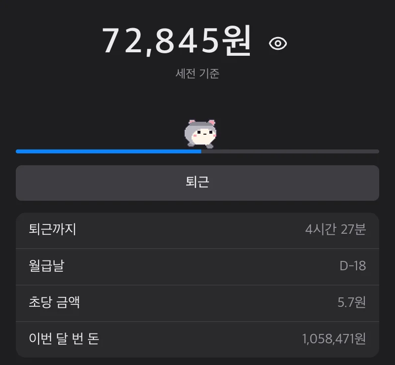
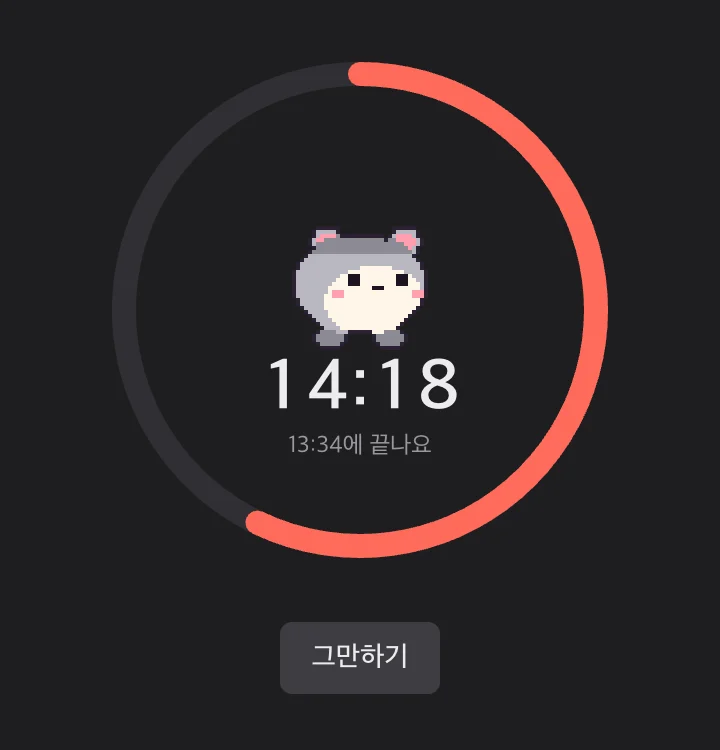

대화
말하면 그 친구 머리 위에
대화 창에 쓴 말이 친구 화면의 내 캐릭터 위에 말풍선으로 떠요. 답장·반응·고치기·읽음 표시까지.
쓴 말이 친구 화면의 내 캐릭터 머리 위에 떠요.
대화 창에 쓴 말이 친구 화면의 내 캐릭터 위에 말풍선으로 떠요. 답장·반응·고치기·읽음 표시까지.
대화 기록에 사진 여러 장, GIF 검색, 링크 미리보기.
그려서 보내면 그룹 모두에게 가요. 보낸 친구 귀 옆에 두루마리가 생기고, 누르면 그린 순서대로 다시 그려져요.
말과 사진은 잠가서 보내고 24시간 뒤 지워져요. 광고·분석 도구 없음.
친구 캐릭터를 누르고, 끌고, 쓰다듬어요.
친구 캐릭터를 누르면 고른 아이템이 포물선으로 날아가 맞아요.
위에서 마우스를 흔들면 하트가 퐁퐁.
먹이를 계속 주면 조금씩 커지다가, 1분 안에 10번쯤 먹으면 응가를 해요. 빗자루로 쓸어 치워요.
:이모트: 를 말에 섞거나, 안녕·기쁨·냠냠·점프 동작.
내 캐릭터와 말풍선은 내가 골라요.
이미지 AI 에게 받은 그림 한 장이나 직접 그린 그림으로 캐릭터·아이템·이모트를 만들어요. 만드는 법
할로윈엔 호박등을 누르면 사탕이 튀고, 내 말풍선 색과 장식은 내가 골라요.
일하는 동안 곁에서 챙겨요.
오늘 번 돈이 초 단위로 올라가요. 내 캐릭터 위에도 띄우고, 금액은 단축키로 가려요. 연봉은 이 기기에만 저장해요.

15·25·50분이나 끝나는 시각을 정하면 그동안 친구 캐릭터를 숨겨요. 친구 화면엔 '몰입 중'이 뜨고, 던지면 '쉿!' 해요.

마우스를 올리면 그 친구의 상태 글이 떠요. 자리 비우면 z, 오래 비우면 Zzz, 앱을 끄면 흐려져요.
설치 없이 폰 브라우저로 같은 대화방에. 폰으로 들어온 친구는 컴퓨터 화면의 몸 위에 파란 영혼으로 떠요.
회사 친구, 동네 친구. 그룹을 오가고, 대화는 창마다 다른 그룹을 봐요.
누르고, 끌고, 말로 부르고, 메뉴에서 고르는 것들이에요.
말하기
놀기
꾸미기
챙기기
전체 목록은 앱 트레이 메뉴의 기능 모음… 에서 볼 수 있어요.
무료로 써요. 올릴 수 있는 캐릭터·아이템 개수엔 한도가 있어요. 초대코드를 받거나 새 그룹을 만들어요.
무료로 써요. 올릴 수 있는 캐릭터·아이템 개수엔 한도가 있어요.
말·사진은 잠가서 보내서 회사망 같은 중간 경로에선 내용을 볼 수 없어요. 24시간 뒤엔 지워져요.
폰에선 웹으로 같은 대화방에 들어와요. 캐릭터 놀이는 컴퓨터 앱에서.
네. 그림을 올리거나 AI 에게 부탁해서 만들 수 있어요. 만드는 법 페이지를 봐 주세요.
받기 칸 아래 SHA-256 과 비교해 보세요. Windows 는 PowerShell 에서 Get-FileHash 파일경로, Mac 은 터미널에서 shasum -a 256 파일경로 로 볼 수 있어요.
Mac 은 시스템 설정 > 개인정보 보호 및 보안에서 "그래도 열기", Windows 는 "추가 정보" > "실행" 을 눌러 주세요.